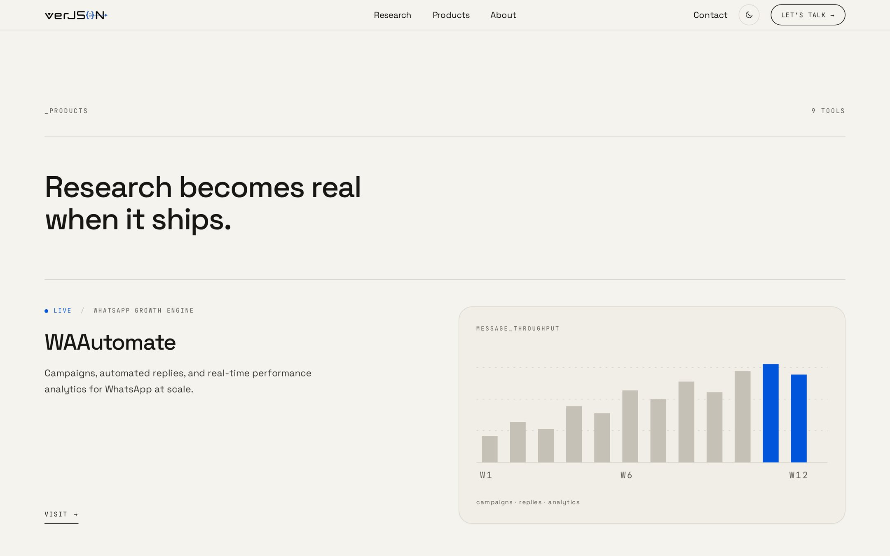
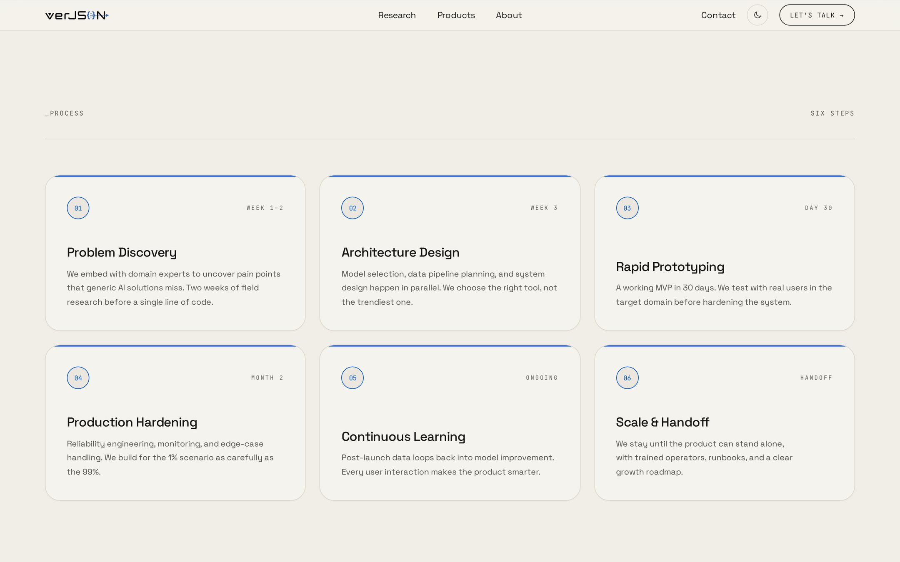
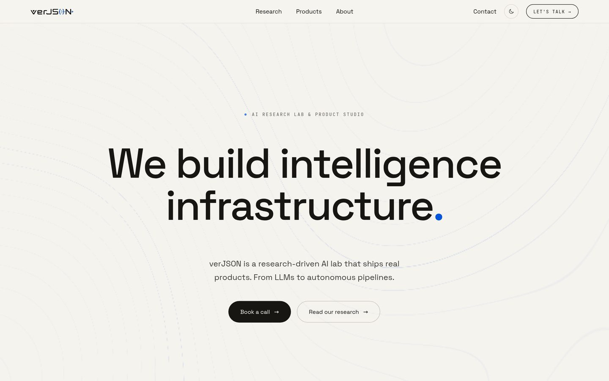

Case study · 2026 · Website design & front-end
verJSON — a company site for a lab with nine products
In brief
The short one, and honestly so. verJSON is an AI research lab that ships products — nine of them, each with its own site. What they did not have was a page that described the company. They were running a bought template that could only ever talk about one thing at a time. This is the replacement: one company-level site about what they do, how they work and which industries they work in, with the products as evidence rather than as the subject.
01 — The brief
A company with nine products and no company page
verJSON had bought a website. It worked, in the sense that it loaded — but it was built on the assumption that a company is a product, and verJSON is not. WAAutomate, Weavedesk, verJSON AI, Propether, Sitenav, Scanzit, Kisaan Companion, Human Rights Connected, Nomico: nine tools across agriculture, logistics, fashion, finance, real estate and advocacy, each with its own site to sell itself.
So the gap was not a better product page. It was the level above: somewhere a visitor lands and understands who this company is, what it does, how it works and what it has shipped — without being pushed into any one product's funnel.
02 — What the site does
Company first, products as proof
There was no elaborate discovery phase here and I am not going to pretend there was. It is a website redesign, and the whole of the thinking is in the running order: what a visitor is shown, and in what sequence, so the argument lands before the catalogue does.
The visual language does one job: make a research lab look like a
research lab. Monospace section markers, a stated count against every
section heading (6 PAPERS, 9 TOOLS,
SIX STEPS), generous rules, one blue accent, and a
light/dark pair where both themes were tuned rather than one being
inverted at the end.


03 — The build
The site, running
This is the part of the case study that matters, so it gets the space. The front end itself is embedded below — not a screen recording. Scroll the whole thing, work through the navigation, and use the theme toggle in the header: the type ramp and the section rhythm were tuned against both themes rather than one being an afterthought.
The thing worth watching for is the running order. By the time you reach the nine products you have already been told what the company believes and what it has published, so the catalogue reads as evidence rather than as the argument.

The production front end, running from this page with no backend attached. Built for a desktop viewport — open it full screen on a phone.
04 — Takeaway
Small project, one real idea
I am not going to inflate this one. There was no research programme and no novel interaction; it is a marketing site, and its value is that it exists at the right altitude. The one idea worth keeping is that a company with many products needs a page that is about none of them — and that the sequence of sections is the whole argument, because a visitor who meets the catalogue first never gets to the company at all.
On the content. Paper titles, venues and author names in the research index are stand-ins pending the client's final list; the nine products, their statuses and their descriptions are real. The build embedded above is the production front end running against static content, with no backend attached.